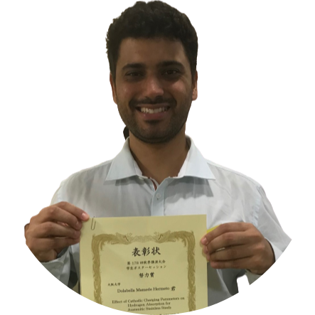

|  |
Hermeto Dolabella MamedeMaster of Engineering. Metallurgical and Materials Engineer. I am graduated in metallurgical and materials engineering at the Federal University of Minas Gerais followed by a master course at Osaka University. Researcher for 2 years at Osaka University investigating the relation between hydrogen and metallic materials. Currently studying web and game development. |
| Period | Formation | Institution | |
|---|---|---|---|
| 2018-2020 | Master of Engineering | Osaka University | |
| 2015-2016 | Undergraduate sandwich program as research student | Osaka University | |
| 2013-2017 | Bachelor of Metallurgical and Materials Engineering | Universidade Federal de Minas Gerais | |
| 2010-2012 | Electrical Engineering | Universidade Federal de Minas Gerais | |
| 2007-2009 | High School | Colegio Santo Agostinho |
| Period | Position | Work Place |
|---|---|---|
| 2018-2020 | Researcher | Osaka University |
| 2016 | Spring Intern | IHI Corporation |
| Computer | Language | ||||||||||||
|---|---|---|---|---|---|---|---|---|---|---|---|---|---|
|
|